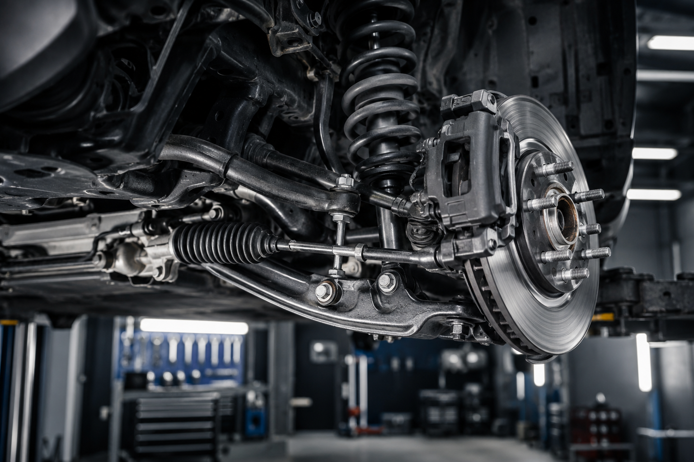

بررسی، تعمیر و تنظیم کامل جلوبندی، سیستم تعلیق و فرمان انواع خودروهای داخلی و خارجی با تجهیزات دقیق و تکنسینهای متخصص.
رزرو این خدمتسیستم جلوبندی نقش بسیار مهمی در کنترل، تعادل، راحتی رانندگی و ایمنی خودرو دارد. خرابی این بخش میتواند باعث لرزش فرمان، کشیدن خودرو به یک سمت، ساییدگی لاستیکها و کاهش کنترل خودرو شود. در تعمیرگاه شاهکار تمامی اجزای جلوبندی با دقت بالا بررسی و تعمیر میشوند.

تمام مراحل مطابق استاندارد و با دقت بالا انجام میشود.
بررسی وضعیت فرمان، لاستیکها و تعادل خودرو.
بررسی سیبکها، طبقها، کمکفنرها و بوشها.
تعویض قطعات فرسوده با نمونه اصلی و استاندارد.
میزان فرمان و تست رانندگی برای اطمینان کامل.
تمام خدمات مربوط به سیستم تعلیق و کنترل خودرو
در صورت مشاهده هر یک از این علائم، سیستم جلوبندی خودرو نیاز به بررسی دارد.